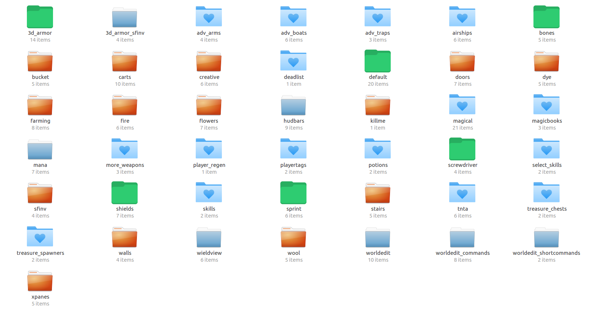

Content
Note : Some details may be left entirely out, as we don't have time to maintain the docs really well.
So if you want to know all the content, have a try on Magic-CTF and discover it by yourself ;)
Overview

Mod overview
Icons :
Green folder : Mod was forked to fit better into Magic-CTF
Orange folder : Mod is a default mod, which was left idle
Blue folder with heart : Mod is by us
Other blue folders : Mod was taken from elsewhere. See "Credits" section for details.
Exceptions :
Advanced Boats(adv_boats) : A fork of the MTG boat mod, but totally different.
Same goes for Gliders(airships) : A fork of the adv_boats mod, but shows almost no resemblance to the boats mod from MTG.
About the forks :
Look the content documentation below.
Texture Packs
It is planned to add multiple texture packs by just filtering the textures.
Currently there is a High Contrast Texture Pack.
It includes a rune progress bar.
However, the Rune Progress Bar is also available standalone.
Crafting Recipes
No crafting recipes will be included in this content documentation, as it's irrelevant - in-game, there's a crafting guide.
Tiers
Following, Tiers stands for those material ranks/tiers :
Mithril
Galvorn
Diamond
Mese
Bronze
Steel
Stone
Wood
In relation to the tiers, "more precious" means higher tier, eg Mithril is more precious than Galvorn.
Mod compatibility
As this is a subgame, most mods depend on other mods' functions. Therefore, it may not be easy to extract certain mods.
Status
If not otherwise stated, you may assume that every contained mod is considered finished, eg most likely won't be improved in future versions.
Skill selection(select_skills)
When you join a Magic-CTF server, a popup formspec will force you to configurate your skills.
It consist out of 3 control buttons :
Cancel(red X) : Reset current config
Ready(green checkmark) : Approve config and start playing. Can only be used if all skill points have been used.
Load last config(yellow arrow) : Load last configuration
Many skill buttons : Click on one to select that skill.
A + and a - button to improve/downgrade certain skills.
Skills
Items obtained by upgrading skills, such as magic wands/staves, won't be able to be dropped. Also, they won't be dropped on death.
Magical(magical)
Mod by KGM. Responsible for some magic in this game. Magic can only be obtained by upgrading the appropriate skills.
Creatures
This adds two creatures, (big) parasites and small ones.
They are pretty similar, however, a big parasite will kill you instantly.
Small parasites on the other hand will infect you, which means they lay eggs inside you, and after some time, you'll die and new small parasites will spawn.
Therefore, keep a look at the n00bs in your team, to make sure they don't carry the plague to your base !
Both are spawned using magic staves, which you can obtain by upgrading the appropriate skills in the skill selection dialog.
When using such a stave, you'll create a Hell Portal, which can't be destroyed and will spawn certain parasites one by one, after time.
Parasites don't belong to any team, so it would be a bad idea to open such a portal next to your base.
Staves
There are many magic spells which can be casted using magic staves/wands. To be able to use them, upgrade them in the skill selection dialog.
For casting spells, sufficient Mana is required. Spells will be stronger if you cast them using more mana.
Spells can deal floating point damage which is summed up.
Physical armor can't protect against spells, while magical can. Galvorn & Diamond armor offer magical protection.
All magic ignores any nodes. Probably magic barricades will get added to this.
Parasites
Comes in two variants, one for spawning big parasites and one for small ones. See "Creatures".
Fire
Kinda basic ? Set enemies on fire using this stave.
Poison
Pretty much like fire, but deals more damage. Why ? Because it's a risk for the caster to use : Poison inflicts nearby players. So never use such a stave if the enemy is too close...
Exile
Having a problem with the parasite plague ? Ban them into exile ! After a time, they'll bother you again, unfortunately...
Heal
Running out of HP ? Heals yourself.
Teamheal
Good for supporting your mates, as it's far stronger than normal heal stave. Also, the more allies you reach, the more it heals yourself !
Dazzling
Go ask KGM.
Curse
Curses you and your enemy, the enemy stronger. You are also cursed if you don't hit anybody. Vengeance needed ?
Bless
Protects you and allies from damage of any kind for some time. You are protected more the more allies you reach.
Lifesteal
Steals life from the victim, healing the caster.
Manadrain
Drains an enemies mana.
Air
Remember the 4 elements ? Blasts enemy players into air.
Survey
Additional information required, commander ? This stave will show additional infos using runes in the air, which are pointing towards parasites or enemies.
Freeze
Covers enemies up in an iceprison. Prison disappears after some time.
Of course this can need some more magic !
Bones(bones)
Added a flag for items which are not to be dropped on death. Examples of such items are initial items or magic wands.
Screwdriver(screwdriver)
Only obtainable in creative.
Player Regeneration(player_regen)
Title says it all : Gives health regen to all players.
Advanced Firearms & Weapons(adv_arms)
This mod adds the following ranged weapons to Magic-CTF :
Launchers :
Single - launches 1
Dual - 2
Hedgehog - 4 in real life, hedgehogs are launchers that spread many watermines over a large area
Rapid Fire - can load 3
Types :
Grenades - explode after fixed time(7.5 s), can be thrown
Smoke
Blend
Gas
Normal/Explosive
Rockets - explode immediately on hit, huge particle effect behind entity, can only be launched
Small, fast
Medium, moderate speed
Large, slow
TNTA Bombs
All TNTA Bombs/Explosives - see below
Guns :
Laser Guns, Laser Beam Guns
Small
Medium
Large
Firearms
stujones' shooter-like
Pistol
Shotgun
Rifle
Submachinegun(SMG)
Sniper Rifle
Machinegun
Colt
Flamethrower
Bows :
Shortbow
Longbow - better shortbow
Crossbow - faster than longbow but worse reload
Arrows come in all tiers. They can't break blocks; when they hit a block, they either break or can be picked up by punching them. Arrows can't hit multiple entities/players. Less precious arrows have a higher chance of breaking.
How they work :
Place ammo on the left side of them
Click to make them reload
If you want to get the ammo out of them during reloading, right-click
To abort the reload, just switch wield item before reloading has finished. You can still get the ammo out with the method mentioned above.
Maybe further stuff will get added to this...
Advanced Boats(adv_boats)
Advanced Boats are a fork of the default Minetest boat Mod.
As in real life, it's not possible to obtain a boat once placed.
To prevent players from spamming boats, placing a boat takes time.
While placing a boat, player must wield boat item. Else, he has to restart the placing process.
There are the following boat tiers :
Steel - 0.8x speed, 20 hp
Bronze - 0.7x speed, 25 hp
Mese - 1.1x speed, 40 hp
Diamond - 1.2x speed, 45 hp
Galvorn - 0.8x speed, 50 hp
Mithril - 1.5x speed, 60 hp
Each boat can take up to 3 people, with one of them being the driver.
People can only join a boat if they are in the same team as the driver, eg a blue player cant join a boat if the driver is red.
Gliders(airships)
Gliders work pretty much like boats. The only difference is that they can accelerate on water, land and in-air.
On water, they can accelerate the fastest, slower on land, and slowest in air.
Once they have accelerated enough, they will rise high.
But they will always lose speed due to friction.
Plus, down key doesnt work as "backwards" anymore - its kinda brake.
Potions(potions)
Adds potions with Tiers(Strength) from 1 to 3 and Level(Duration) from 5s to 15s.
HUD Bars show you your potion stats. You can drink up to 5 potions at a time.
Particle Effects appear when somebody uses a potion.
Potions :
Antigravity
Jump
Speed
Regen
More potions are planned.
Advanced Traps(adv_traps)
Spikes
Spikes come in all Tiers. The higher the tier, the harder they are to dig and the more damage they deal.
Parasite Egg
Parasite Eggs are triggered if an enemy goes next to them or a Rune Signal reaches them.
Drainers
Drainers lower enemies' stats in radius.
There are two drainers :
Mana
HP
Rune Signal System
A rune ore, comparable to coal, can be dug to craft Rune Stones.
Rune Signals can trigger :
Rune Stones
Advanced TNT Bombs
Parasite Eggs
It is planned to add more features.
There are the following Rune Stones :
Connector - will trigger nearby Rune Stones when triggered - kinda wiring
And-Gate - will only trigger Rune Stones below and above if all x-z Plane nearby Rune Stones are one, like a logic and.
Not-Gate - triggers when a Rune Stone above/below switches off.
Stepper - triggers when somebody steps on or when it is right clicked
Detector - triggers when somebody is in radius or when it is right clicked
Disappear Block - becomes invisible when triggered. Reappears when triggered again.
Advanced TNT(tnta)
A well-known and quite popular mod by KGM, modified by LMD.
It adds lots of explosives :
Bombs - the well-known bomb. It explodes, deals damage to nearby players and blasts 'em away.
Blenders - did you ever want to make your enemy see nothing ? If your enemy sees the bright light, he'll be blind for some time(uses minetest.line_of_sight)
Smoke Bombs - smoke particles allow you to prevent everybody from seeing too muchn radius
Gas Bombs - no explosion, sorry - but major damage dealt to anybody in radius
And many of them come in different types.
World Edit(worldedit, worldedit_(short-)commands)
Mods by the WorldEdit Team.
Provides a reliable and easy to use voxel manipulation mod. Really useful for map-making, and therefore included herein.
Please note that the GUI is not present.
3D Armor(3d_armor, 3d_armor_sfinv, shields)
Mods by stu.
3d_armor_sfinv was left idle.
Provides armor to protect the player from taking damage. A popular and well known mod.
If you want to look at it's documentation, visit MT Forum : 3D Armor Modpack
Was slightly modified by LMD to add Galvorn Armor, add magical protection and alter Mithril Armor textures. Some stats were tweaked, too, and a "Wear" label was added, showing the player how much his armor will last.
Fun fact : In order to create Mithril & Galvorn Armor Textures, I wrote a littl' Java Helper...
HUD bars & Mana(hudbars, mana)
Mods by Wuzzy.
Improves hudbar look. A mana bar is added, too.
If you want to look at it's documentation, visit MT Forum : HUD bars Mod, Mana Mod.
Sprint(sprint)
Mod by GunshipPenguin.
Adds a sprint bar. Allows you to sprint while pressing E if you have enough stamina. Was slightly modified to make it compatible with potions. MT Forum Reference : Sprint Mod
Kill History(deathlist)
Shows kill messages :
Player X Used item killed Player Y
Also handles ELO & K/D System.
Furthermore, handles knockback.
Magic Tables(magicbooks)
CTF core. Provides Magic Tables, responsible for messages, map system, etc.
Magic Tables
Magic Tables are all-in-one :
Item Spawner
Team Chest
Flag
The inventory has got three sections :
A shared one, which can be acessed by every team member.
A low-elo section(3x4 slots) - can only be accessed & seen by low elo players
A high-elo section(2x4 slots) - can only be accessed & seen by high elo players
The flag equivalent are magic books.
The item spawning works similar as for Treasure Spawners.
CTF mechanics work pretty common : When the flag holder is killed, the flag returns. You can only score if your flag is at home.
It's not possible to punch a player next to his magic table.
Colored messages will tell you what to do in-game.
Message System
Messaging works pretty easy :
When you type something, it becomes a secret message, which only your team can see.
If you want to write a global message, use @all before your message : @all Hello everybody !
If you want to write a message to a certain player, use @playername : @singleplayer How is it goin', singleplayer ?
Health Rune
A rune on your front showing your health. Can be hidden using armor(chestplate).
Crafting Guide
An intuitive crafting guide, using sfinv. Entirely made by LMD.
Player Nametags(playertags)
Shows player names above players.
More Weapons(more_weapons)
More Weapons ! An altered version of some code by KGM. Adds :
New materials :
Mithril
Galvorn
And new tools using all materials :
Spears
Battleaxes
Scythe
Warhammer
Mace
Halberd
Treasure Chests(treasure_chests)
Adds :
Treasure Chest Spawners for map-making
Treasure Chests, which come in the following tiers :
Golden(4x8 slots)
Iron(2x8 slots)
Wooden(1x8 slots)
A price calculation system estimates the price of items which is the chance of obtaining them.
Precious items are the ones that are more rare.
Treasure Spawners(treasure_spawners)
Adds Treasure Spawners. Uses same "price calculation" system as Treasure Chests. When they spawn treasure, a green particle effect appears.
Magic-CTF is a new, magically themed CTF Engine & Game for Minetest Servers.
Minetest is a free software game engine currently under development to create various games based on voxel gameplay, inspired by InfiniMiner, Minecraft, and the like. Minetest was originally created by Perttu Ahola (alias “celeron55”).
Page generated by md-pypage.